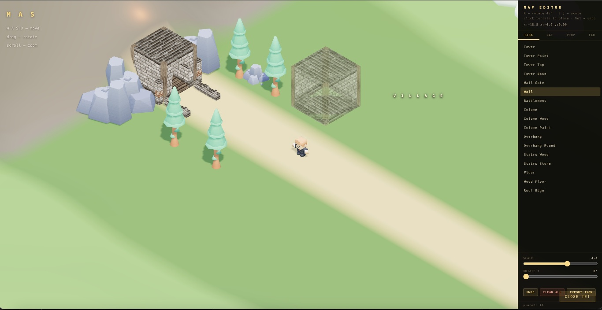
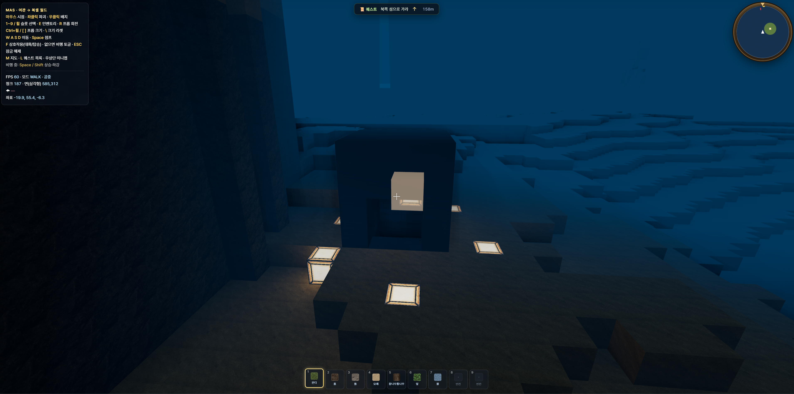
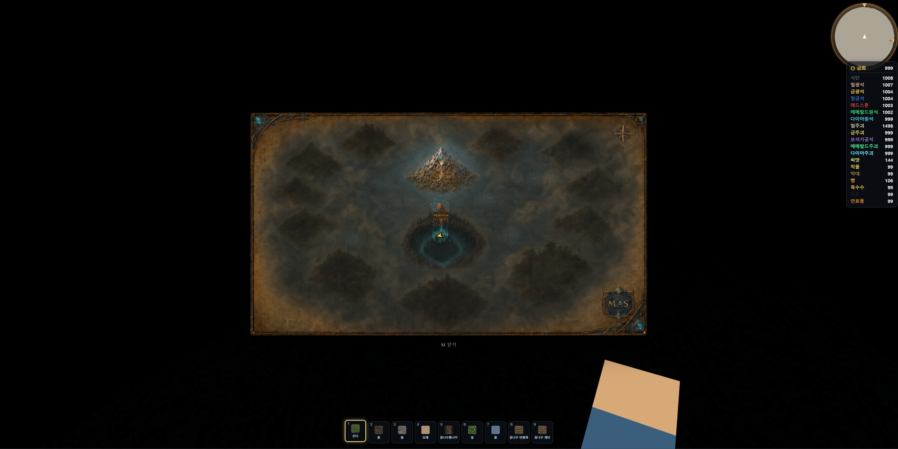
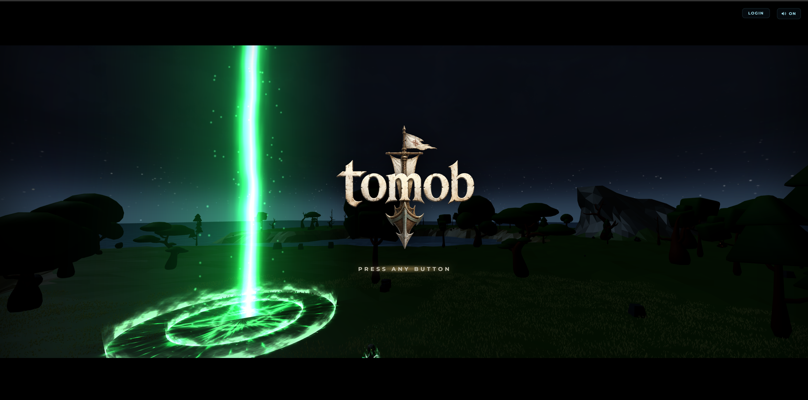
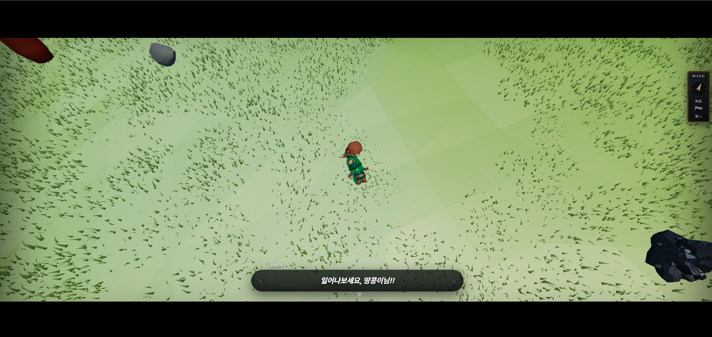

미리보기 안에서 스크롤해 인트로를 체험할 수 있습니다.실제 사이트 보기 ↗
01 · Product Idea
게임에서 얻은 성취가 실제 프로덕트 제작으로 이어질 수 있을까?
tomob의 핵심은 게임 자체가 아니었습니다. 탐험과 전투, 항해를 통해 재화를 모으고 그 재화로 디자인·개발 같은 외주 프로덕트를 의뢰하는 경험을 구상했습니다. 놀이의 동기와 실제 제작 서비스를 하나의 경제 안에 연결하려는 제품 실험이었습니다.
02 · Core Loop
플레이가 끝나는 지점을 보상이 아니라 제작 의뢰로 바꿨습니다.
01 · PLAY탐험과 전투
월드를 이동하고 전투·항해·채집 활동을 수행합니다.
02 · EARN게임 재화 획득
플레이 결과로 제작 의뢰에 사용할 수 있는 재화를 축적합니다.
03 · COMMISSION프로덕트 의뢰
필요한 디자인·개발 작업의 범위와 조건을 선택합니다.
04 · BUILD실제 결과물
게임 밖에서 사용할 수 있는 실제 프로덕트 제작으로 연결됩니다.
03 · Live Experience
설명보다 먼저, 실제 Three.js 인트로를 체험할 수 있게 했습니다.
아래 화면에서 직접 스크롤하면 바다에서 동굴과 차원문으로 이어지는 인트로 연출을 확인할 수 있습니다.
04 · Evolution
게임의 형태보다, 지금 단계에서 무엇을 검증해야 하는지에 따라 기술을 바꿨습니다.
tomob는 처음부터 지금의 모습이 아니었습니다. 탑뷰로 핵심 루프를 확인한 뒤 공간 경험을 위해 Voxel로 전환했고, 프레임과 표현의 한계를 확인한 뒤 Mesh 기반 월드로 다시 옮겼습니다.
Top View→Voxel World→Mesh World→Modular Build→Harness Refactor
Phase 01 · Top View
처음에는 위에서 내려다보는 작은 월드였습니다.
이 단계의 목적은 그래픽 완성도가 아니라 이동, 건설, 월드 편집처럼 게임의 기본 루프가 브라우저에서 작동하는지 빠르게 확인하는 것이었습니다.

Phase 02 · Voxel
직접 탐험하고 만드는 감각을 위해 Voxel 월드로 전환했습니다.
1인칭 공간, 블록 기반 지형, Seed 월드, 제작과 항해를 한 환경에 넣었습니다. 게임의 범위는 빠르게 넓어졌지만, 블록 수가 늘수록 프레임 비용과 장면 관리 복잡도가 함께 커졌습니다.




Phase 03 · Mesh
프레임과 표현의 한계를 해결하기 위해 Mesh 기반 월드로 업그레이드했습니다.
Voxel을 끝까지 최적화하는 대신, 이미 만들어진 3D 에셋과 Mesh 지형을 활용하는 방향으로 기술 선택을 바꿨습니다. 한 화면에 더 많은 시스템을 올리면서도 인트로, 전투, 항해의 연출 밀도를 높일 수 있었습니다.


Phase 04 · Modular
기능을 모듈로 분리하면서 병렬 개발이 가능해졌습니다.
전투, 항해, 스킬, 크루, 세이브를 각 모듈로 나누고 공통 컨텍스트를 통해 연결했습니다. 서로 독립적인 기능은 동시에 개발하고, 의존성이 있는 작업만 순서대로 이어갈 수 있게 됐습니다.
Phase 05 · Harness
빠르게 만든 모듈을 하네스로 검증하며 리팩터링했습니다.
병렬 개발은 속도를 높였지만 모듈 사이의 회귀 버그도 늘렸습니다. 문법 검사만으로 잡히지 않는 입력 충돌, 세이브 복원, 물리 상태, 보상과 밸런스를 자동 Check와 시뮬레이션 불변식으로 검증했습니다.
05 · Product System
게임 화면 뒤에는 서로 영향을 주는 시스템이 있었습니다.
섬과 지형
스트리밍되는 섬, 지면 판정, 항구와 채집 시스템을 하나의 월드 규칙으로 연결했습니다.
전투와 AI
지각, 공격 토큰, 디렉터를 공통 AI 코어로 묶어 적마다 달라지던 행동 규칙을 정리했습니다.
항해와 크루
파도, 부력, 조타, 갑판 크루의 이동과 역할 지시가 같은 공간에서 작동하도록 구성했습니다.
세이브와 복원
순수 JSON 스냅샷과 모듈별 복원 훅으로 전투·배·조선소 상태가 이어지도록 만들었습니다.
입력 모드
도보·조타·건설·컷신의 입력 충돌을 라우터에서 차단하고 키맵을 단일 문서로 관리했습니다.
밸런스 SSOT
레벨·공격·성장 수치를 한곳에서만 조정해 AI가 여러 파일에 값을 복제하지 못하게 했습니다.
06 · Key Decision
프롬프트를 잘 쓰는 것보다, AI가 틀려도 발견되는 구조가 필요했습니다.
작업이 커질수록 긴 지시문보다 단일 진실 공급원, 명시적인 모듈 경계, 자동 검증이 더 중요했습니다. 새 입력은 입력 라우터로, 새 이벤트는 이벤트 시스템으로, 새 밸런스 값은 BAL로 들어가게 규칙을 고정했습니다.
01작업 범위 정의
02SSOT 확인
03작은 단위 구현
04자동 Check
05실플레이 판정
07 · 3D Production
화면을 보며 결정해야 하는 일은 직접 조정할 수 있게 만들었습니다.
WASD로 카메라 구도를 잡고 좌표를 복사
문장으로 카메라 위치를 반복 설명하는 대신 실제 화면에서 움직이며 확정했습니다.
위치·회전·크기를 슬라이더로 조정
오브젝트를 선택하고 transform 값을 직접 바꾸며 장면 안에서 즉시 확인했습니다.
에셋 분류
수백 개의 3D 에셋을 용도별로 분류하고 미리보기 도구로 확인했습니다.
셰이더와 효과
기본 파티클 대신 장면의 목적에 맞는 셰이더와 포스트프로세싱을 적용했습니다.
렌더링 최적화
draw call, 라이트 재컴파일, 블룸 패스를 추적해 체감 끊김을 줄였습니다.
08 · Verification
AI가 만든 버그를 감으로 찾지 않도록 검사 하네스를 만들었습니다.
문법 검사만으로는 물리와 상태 버그를 찾을 수 없었습니다. 부팅·키 충돌·아이템·세이브·밸런스·몹·퀘스트를 자동 검사하고, 장시간 시뮬레이션으로 배 보상과 항구 상태 같은 불변식을 확인했습니다.
Rapier 이중 제거
같은 rigid body를 두 번 제거해 발생하던 크래시를 수명주기 규칙으로 차단했습니다.
공유 머티리얼
복제된 몬스터가 머티리얼을 공유해 피격 상태가 번지던 문제를 개별 복제로 해결했습니다.
백그라운드 렌더
숨겨진 탭의 rAF 정지가 만든 가짜 VFX 결과를 발견하고 검증 방법을 분리했습니다.
tomob를 만들며 배운 것은 AI가 코드를 얼마나 많이 쓰는가보다, 복잡한 작업을 어떤 구조로 통제하는가였습니다.
09 · Next Product
반복해서 직접 만든 카메라·오브젝트 도구는 Scene Director의 출발점이 됐습니다.
tomob는 결과물이고, Scene Director는 그 결과물을 만들면서 발견한 제작 병목을 독립 제품으로 전환한 다음 단계입니다.